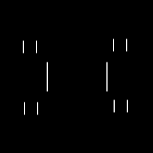
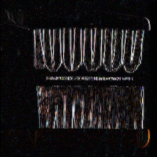
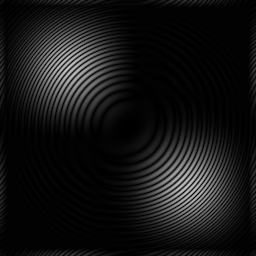

Jingcong Zhang
2016-10-04
squares.png
pulse.filt:

tent.filt:

hp.filt: It can detect the edges.

sobol-horiz.filt: It can detect horizonal edges.
sobol-vert.filt: It can detect vertical edges.

brushes.png
pulse.filt:

tent.filt:

hp.filt:

sobol-horiz.filt:
sobol-vert.filt:

Filters:
emboss.filt: To make the image like an embossment.
6 15
-1 -1 -1 -1 0
-1 -1 -1 0 1
-1 -1 0 1 1
-1 0 1 1 1
0 1 1 1 1
gaussian.filt: To blur the image.
6 13
1 2 1
2 4 2
1 2 1
sines.png
Theta = 0, sigma = 4, period = 4

Theta = 0, sigma = 4, period = 8

Theta = 45, sigma = 4, period = 4

Theta = 45, sigma = 4, period = 8
